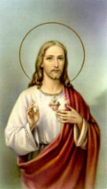
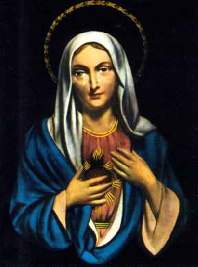

"DEVOÇÃO AOS SAGRADOS CORAÇÕES"
 HISTÓRIA E ANTECEDENTES
- Constitui um inestimável
tesouro da vida espiritual, o sentido das devoções ao SAGRADO
CORAÇÃO DE JESUS e ao IMACULADO
CORAÇÃO DE MARIA. Sobre eles individualmente, existe
uma vasta e notável literatura, que projeta com fidelidade a
grandeza da bondade e a misericórdia Divina por toda
humanidade.
HISTÓRIA E ANTECEDENTES
- Constitui um inestimável
tesouro da vida espiritual, o sentido das devoções ao SAGRADO
CORAÇÃO DE JESUS e ao IMACULADO
CORAÇÃO DE MARIA. Sobre eles individualmente, existe
uma vasta e notável literatura, que projeta com fidelidade a
grandeza da bondade e a misericórdia Divina por toda
humanidade.
Quando JESUS estava pregado a Cruz, conforme descreve São João Evangelista no seu evangelho, o centurião Longino para verificar se ELE estava vivo ou morto, cravou sua lança no lado direito do SENHOR, entre a 5ª e a 6ª costela, atingindo o Coração do Redentor e naquele mesmo momento saiu sangue e água (Jo 19,33-34). Os Santos Padres da Igreja viram no "sangue e na água" que saíram de JESUS Crucificado um sentido muito mais profundo: na "água" o símbolo do Sacramento do Batismo e no "sangue" , o símbolo do Sacramento da Eucaristia, e nos dois Sacramentos, o "sinal" da Igreja que nascia para reunir todos as gerações purificadas pelo Sagrado Sangue do Salvador.
O Coração do SENHOR aberto pela lança do centurião romano jamais fechou... Poderíamos dizer que através daquela abertura, generosamente sem cessar, derrama misericórdia, bondade, proteção e forças para as pessoas de todas as gerações, iluminando decisões, santificando a existência, inspirando procedimentos, auxiliando na jornada cotidiana, defendendo contra as terríveis insídias de Satanás e muitas outras providências, a fim de que as criaturas executem integralmente a missão de sua vida.
Esta realidade conduziu as
criaturas a invocarem confiantemente o Coração do SENHOR,
com a convicção de serem atendidas nas súplicas, primordialmente depois que
ELE Mesmo mostrando a grandeza do Amor Divino, estimulou
a devoção ao Seu Sagrado Coração, aparecendo a Margarida
Maria de Alacoque, uma jovem irmã no Mosteiro da Visitação em Paray-le-Monial,
na França, em inesquecíveis Aparições. Logo na primeira Aparição em
27 de Dezembro de 1673, JESUS confiou 12 favores de Sua Grande Promessa
em benefício de todos aqueles que se dispusessem a seguir
fielmente suas recomendações e decidissem receber em "estado de graça" a Comunhão Eucarística na primeira sexta-feira de cada mês, durante
nove meses consecutivos. Além daqueles benefícios prometeu o SENHOR...
"que as pessoas não morrerão no
Meu desagrado e terão oportunidade de receberem os Sacramentos, sendo o Meu
Sagrado Coração refúgio e consolo para elas, naquele momento de transe 
Depois desta notável manifestação do SAGRADO CORAÇÃO DO SENHOR JESUS, outros fatos admiráveis aconteceram até os nossos dias: as Aparições de JESUS a Irmã polonesa Maria Faustina Kowalska em 1931, as Aparições a Julia Kim na Coréia do Sul, a Josefina Maria na Austrália, que confirmam a ilimitada bondade do SENHOR e o desejo Divino, de que o SAGRADO CORAÇÃO seja a inspiração e a morada para todas as pessoas.
A devoção ao IMACULADO CORAÇÃO DE MARIA começou concretamente a partir do dia 13 de Maio de 1917, quando NOSSA SENHORA aparecendo em Fátima na Cova da Iría, Portugal, a três pequenos pastores: Lúcia, Francisco e Jacinta, divulgou e ofereceu meios para a propagação desta querida devoção. Embora, não podemos deixar de mencionar, que no ano de 1830 a VIRGEM MARIA apareceu a Catarina Labouré, na França, e mandou que ela cunhasse uma medalha na qual ostenta num dos lados, o M emblema do Nome de Maria, numa alusão ao devido reconhecimento que a humanidade deve ter à nossa MÃE SANTÍSSIMA pelo auxílio, zelo e cuidados que maternalmente e repleta de amor, Ela dedica à todos os seus filhos, principalmente àqueles que buscam a sua preciosa e tão querida proteção. Pelas muitas graças alcançadas, a medalha ficou conhecida como "Medalha Milagrosa". Embaixo do M de MARIA, estão dois corações, representando o Sagrado Coração de JESUS e o Imaculado Coração de MARIA. Mas, sem dúvida, foi em Fátima que a VIRGEM MARIA solicitou claramente a Irmã Lúcia que divulgasse a sua devoção e a Irmã levou o pedido de nossa MÃE SANTÍSSIMA ao conhecimento das autoridades eclesiásticas, para que fosse realizado o desejo Divino, sendo instituída a devoção ao Seu IMACULADO CORAÇÃO.
Da mesma forma que a devoção ao SAGRADO CORAÇÃO DE JESUS, a devoção ao IMACULADO CORAÇÃO DE MARIA tem amplitude mundial, sendo cultivada fervorosamente por um grande número de fieis, havendo Associações, Institutos, Congregações, Igrejas e Santuários dedicados e entregues a proteção do Sagrado Coração de Jesus individualmente e também ao Coração Imaculado de Maria, em todos os países onde o cristianismo chegou.
 Todavia, a devoção ao
SAGRADO CORAÇÃO DO REDENTOR UNIDO AO IMACULADO
CORAÇÃO DE SUA MÃE E NOSSA MÃE SANTÍSSIMA, é um mistério
profundo e fascinante, que o SENHOR também revelou,
mas que somente agora a divulgação ganhou amplitude, para júbilo,
conhecimento e beneficio da humanidade. Muito embora, é bem
verdade que aconteceram uma série de manifestações sobrenaturais como
prelúdio, que sem dúvida, dão uma forte indicação do desejo Divino,
para o cultivo da Devoção aos Dois Sagrados Corações
Todavia, a devoção ao
SAGRADO CORAÇÃO DO REDENTOR UNIDO AO IMACULADO
CORAÇÃO DE SUA MÃE E NOSSA MÃE SANTÍSSIMA, é um mistério
profundo e fascinante, que o SENHOR também revelou,
mas que somente agora a divulgação ganhou amplitude, para júbilo,
conhecimento e beneficio da humanidade. Muito embora, é bem
verdade que aconteceram uma série de manifestações sobrenaturais como
prelúdio, que sem dúvida, dão uma forte indicação do desejo Divino,
para o cultivo da Devoção aos Dois Sagrados Corações
Como mencionamos acima, as Aparições de NOSSA SENHORA a Catarina Laboreau em 1830, deram origem a famosa Medalha Milagrosa, a qual apresenta na frente a imagem de NOSSA SENHORA DAS GRAÇAS, como habitualmente é mostrada, derramando "Graças" sobre a humanidade. Do outro lado da medalha embaixo do "M" de MARIA, tem dois corações, representando os Sagrados Corações de JESUS e MARIA. O Coração de JESUS está envolto por um arco de espinhos, e o coração de MARIA está atravessado por um punhal. Desse modo, esta primeira representação pode sugerir também, um devido e filial cultivo da Devoção em conjunto aos Dois Sagrados Corações.
Depois, em 1916, antes das extraordinárias Aparições de NOSSA SENHORA em Fátima que aconteceram no ano seguinte de 1917, como a preparar o coração dos pequeninos pastores para a suprema visita da MÃE DE DEUS, o CRIADOR enviou o Anjo da Paz as crianças, por três vezes. O Anjo nas suas orações, referiu-se aos SAGRADOS CORAÇÕES DE JESUS E MARIA, confirmando o desejo Divino de que fossem também lembrados numa única e fervorosa devoção, porque OS DOIS SAGRADOS CORAÇÕES estão unidos num Amor Eterno cheio de misericordia e repleto de bondade em benefício da humanidade de todas as gerações:
 Na primeira visita o Anjo
ensinou às crianças a seguinte oração: "Meu DEUS! Eu creio, adoro, espero e amo-VOS!
Peço-VOS perdão para os que não crêem, não adoram, não esperam e não VOS
amam".
Na primeira visita o Anjo
ensinou às crianças a seguinte oração: "Meu DEUS! Eu creio, adoro, espero e amo-VOS!
Peço-VOS perdão para os que não crêem, não adoram, não esperam e não VOS
amam".
Na segunda visita, disse o Anjo: "Orai assim, os CORAÇÕES DE JESUS E MARIA estão atentos à voz das vossas súplicas. Orai e orai muito! Os CORAÇÕES SANTÍSSIMOS DE JESUS E MARIA tem sobre vós desígnios de misericórdia. Oferecei constantemente ao Altíssimo, orações e sacrifícios".
Na terceira e última Aparição, o Anjo ensinou-lhes a prece que ficou conhecida com o nome de Oração do Anjo: "SANTÍSSIMA TRINDADE, PAI, FILHO E ESPIRITO SANTO, ofereço-VOS o preciosíssimo Corpo, Sangue, Alma e Divindade de JESUS CRISTO, presente em todos os sacrários da Terra, em reparação dos ultrajes, sacrilégios e indiferenças com que ELE mesmo é ofendido. E pelos méritos infinitos, do Seu SANTÍSSIMO CORAÇÃO e por intercessão do CORAÇÃO IMACULADO DE MARIA, peço-VOS a conversão dos pobres pecadores".
Mas, sem dúvida, a Devoção
começou a ganhar amplitude a partir de Julho de 1985, quando o Papa João
Paulo II, inspirado pelo ESPÍRITO SANTO, falou diversas
vezes sobre os CORAÇÕES DE JESUS E MARIA, servindo-se inclusive
de uma carinhosa e inesquecível expressão: "ALIANÇA DOS DOIS CORAÇÕES"
. 
Atraídos pela formulação, os cristãos acolheram esplendidamente o desígnio
do CRIADOR, não só por se tratar da união de duas tão
queridas devoções, mas primordialmente pela magnitude de seu mistério,
que a condescendência Divina colocou ao alcance de todos.
Entretanto, é importante discernir que os DOIS SAGRADOS CORAÇÕES, não são apenas maravilhosos símbolos e ornamentos da vida cristã. "O significado que nós agora damos ao coração", disse o Papa João Paulo II, "transcende essas considerações parciais e atinge o santuário da consciência pessoal de si mesmo, onde se resume e condensa a essência concreta do homem, o centro em que o indivíduo se decide, a respeito de si mesmo, dos outros, do mundo e do próprio DEUS". (Clínica Gemelli, Roma).
A ALIANÇA DOS DOIS SAGRADOS CORAÇÕES, constitui uma União idealizada pelo ETERNO PAI, objetivando alcançar o coração de todas as criaturas, para proteger, auxiliar e inspirar as pessoas, a fim de que tenham um santo e decidido desempenho no cumprimento de sua missão existencial.
A Igreja Católica das Filipinas foi a primeira a se manifestar positivamente em favor da Devoção aos DOIS SAGRADOS CORAÇÕES, organizando um Simpósio Internacional sobre o assunto, que foi realizado em Fátima, Portugal, em Setembro de 1986, com uma notável e entusiástica participação de cristãos do mundo inteiro. Depois dele, aconteceram diversos eventos em outros países, aprofundando o conhecimento da revelação e penetrando no mistério Divino.